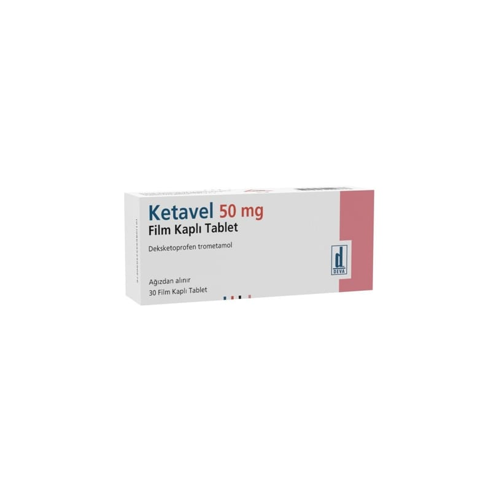

Ketavel 50 mg Film Kaplı Tablet, 30 Film Kaplı Tablet)

Ne için kullanılır
KT · Bölüm 1KETAVEL, steroid olmayan antiinflamatuvar ilaçlar (NSAİİ) (iltihap giderici) olarak adlandırılan ilaç grubundan bir ağrı kesicidir.
Osteoartrit (eklemlerde harabiyet ve kireçlenme), romatoid artrit (iltihabi eklem rahatsızlığı) ve ankilozan spondilit (daha çok omurga eklemlerinde sertleşme ile seyreden, ağrılı ilerleyici romatizma) belirti ve bulgularının tedavisi ile akut gut artriti (gut hastalığına bağlı ağrılı eklem iltihabı), akut kas iskelet sistemi ağrıları (örn. bel ağrısı), postoperatif ağrı (ameliyat sonrası ağrı) ve dismenore (ağrılı adet dönemleri) tedavisinde endikedir.
KETAVEL 50 mg deksketoprofen (trometamol olarak) içerir ve 20, 30 tabletlik ambalajlar halinde mevcuttur.
Beyaz renkli, yuvarlak, bir yüzü çentikli, film kaplı tabletlerdir.
2. KETAVEL’i kullanmadan önce dikkat etmeniz gerekenler KETAVEL’i aşağıdaki durumlarda KULLANMAYINIZ Eğer, • Deksketoprofen trometamole veya KETAVEL’in içindeki yardımcı maddelerden herhangi birine karşı alerjiniz (aşırı duyarlılık) varsa; • Asetilsalisilik aside veya diğer steroid olmayan antiinflamatuvar ilaçlara karşı alerjiniz varsa; • Astımınız varsa veya geçmişte aspirin veya diğer steroid olmayan antiinflamatuvar ilaçlar kullandıktan sonra astım atağı, akut alerjik rinit (alerjiye bağlı burun içerisinde kısa süreli iltihaplanma), burunda polip (alerjiye bağlı burun içerisinde oluşan kitleler), ürtiker (cilt döküntüsü), alerji sonucu yüz ve boğazda şişme (yüz, gözler, dudaklar veya dilde şişlik, veya solunum zorluğu) veya göğüste hırıltı (wheezing) meydana geldiyse; • Ketoprofen (steroid olmayan anti-inflamatuvar bir ilaç) veya fibrat (kandaki yağı düşürmek için kullanılan bir ilaç) kullanımı sırasında fotoallerjik veya fototoksik reaksiyonlardan şikayet ediyorsanız (güneşe maruz kalan cildin kızarması ve/veya kabarması şeklindeki belirtiler; • Peptik ülser (mide-bağırsak yarası), mide ya da bağırsak kanaması veya süregelen sindirim sorunlarınız varsa (örn. hazımsızlık, göğüste yanma) veya daha önceden mide ya da bağırsak kanaması, ülser (mide-bağırsak yarası) veya delinme geçirdiyseniz; • Süregelen sindirim sistemi problemleriniz varsa (örneğin, hazımsızlık, mide ekşimesi); • Ağrı kesici olarak kullanılan steroid olmayan antiinflamatuvar ilaçların (NSAİİ) kullanımına bağlı olarak geçmişte mide veya bağırsak kanaması veya delinmesi geçirdiyseniz; • Süregelen iltihaplı bağırsak hastalığınız (Crohn hastalığı veya ülseratif kolit) varsa; • Ciddi kalp yetmezliğiniz, orta veya şiddetli böbrek sorunları veya ciddi karaciğer sorunlarınız varsa; • Kanama bozukluğunuz veya kan pıhtılaşma bozukluğunuz varsa; • Kusma, ishal veya yeterli olmayan miktarda sıvı alımı nedenlerinden dolayı şiddetli derecede dehidrasyonunuz varsa (vücudun çok miktarda sıvı kaybı); • Hamileliğinizin üçüncü üç aylık dönemindeyseniz veya emziriyorsanız; • Koroner arter cerrahisi (Koroner arter by-pass greft) geçirdiyseniz, ameliyat öncesi, sırası ve sonrası ağrıların tedavisinde kullanmayınız.
KETAVEL’i aşağıdaki durumlarda DİKKATLİ KULLANINIZ Eğer, • Alerjiniz varsa veya geçmişte alerjik sorunlarınız olduysa; • Sıvı tutulumu dahil, böbrek, karaciğer veya kalp sorununuz varsa (yüksek tansiyon ve/veya kalp yetmezliği) veya bu sorunların herhangi bir tanesinden geçmişte şikayetiniz olduysa; • Diüretik (idrar söktürücü) ilaçlar alıyorsanız veya aşırı sıvı kaybı nedeniyle (örn. Aşırı idrara çıkma, ishal veya kusma) sıvı eksikliği ve kan hacminde azalma sorunları yaşıyorsanız; • Kalp sorunlarınız varsa, daha önce inme geçirdiyseniz veya risk altında olduğunuzu
düşünüyorsanız (örn. yüksek tansiyon, diyabet veya yüksek kolesterolünüz varsa veya sigara kullanıyorsanız) tedaviniz hakkında doktorunuza veya eczacınıza danışınız. KETAVEL gibi ilaçlar kalp krizi riskinde (“miyokard infarktüsü”) veya inme riskinde hafif artış ile ilişkilendirilebilir. Yüksek doz ve uzun süreli tedavi ile her türlü risk daha olasıdır. Önerilen dozu veya tedavi süresini aşmayınız. • Yaşlıysanız: yan etki yaşama olasılığınız daha yüksektir (bkz. Bölüm 4). Bunlardan herhangi biri meydana gelirse derhal doktorunuza başvurunuz; • Üreme problemi olan bir kadın iseniz (KETAVEL üremeyi olumsuz yönde etkileyebilir, bu nedenle gebe kalma planınız varsa veya kısırlık testi yaptıracaksanız bu ilacı kullanmayınız); • Hamileliğinizin birinci veya ikinci üç aylık dönemindeyseniz; • Kan veya kan hücreleri yapımı bozukluğunuz varsa; • Sistemik lupus eritomatozus (ciltte yaygın pullanmayla kendini gösteren bir hastalık) veya karışık bağ dokusu hastalığınız varsa (bağ dokusunu etkileyebilen bağışıklık sistemi bozuklukları); • Geçmişte iltihaplı bağırsak hastalığı geçirdiyseniz (ülseratif kolit, Crohn hastalığı); • Başka bir mide ve bağırsak hastalığınız varsa veya daha önce geçirdiyseniz; • İstisnai olarak NSAİİ’ler enfeksiyonu arttırabileceğinden, varisellanız (suçiçeği) varsa; • NSAİİ’ler kanama, mide-bağırsak yarası veya delinmesi gibi ölümcül olabilecek ciddi mide-bağırsak sistemi yan etkilerine yol açarlar. Bu yan etkiler herhangi bir zamanda, önceden uyarıcı bir bulgu vererek veya vermeksizin ortaya çıkabilirler. Yaşlı hastalar ciddi mide-bağırsak sistemi yan etkileri bakımından daha yüksek risk taşımaktadırlar; • Peptik ülser veya kanama riskini arttıran ilaçlar alıyorsanız, örn; oral steroid, bazı antidepresanlar (SSRI tipli; örneğin Selektif Serotonin Gerialım İnhibitörleri); kanın pıhtılaşmasını önleyen aspirin veya varfarin gibi antikoagülan ilaçlar. Bu durumlarda, KETAVEL almadan önce lütfen doktorunuza danışınız. Midenizi koruyucu ilave ilaçlar (örn. misoprostol veya mide asidi üretimini engelleyici ilaçlar) verebilir; • Asetilsalisilik asit ve/veya NSAİİ’lere popülasyonun geri kalanından daha yüksek alerji riskiniz olduğundan, asetilsalisilik asit veya diğer NSAİİ’lerin alımı sonucunda kronik rinitle beraber astım, kronik sinüzit ve/veya burun polipi şikayetiniz varsa. Bu ilacın kullanımı özellikle asetilsalisilik asit veya NSAİİ’lere alerjisi olan hastalarda, astım atakları veya bronkospazma (solunum yollarının daralması) neden olabilir.
Bu uyarılar geçmişteki herhangi bir dönemde dahi olsa sizin için geçerliyse lütfen doktorunuza danışınız.
KETAVEL’in yiyecek ve içecek ile kullanılması Tabletleri yeterli miktarda su ile alınız. Tabletleri yiyecek ile almanız mide veya bağırsakta ortaya çıkabilecek yan etki riskini azaltmaya yardımcı olur. Bununla birlikte, akut ağrınız varsa, tabletleri aç karnına alınız. İlacı yemeklerden en az 30 dakika önce almanız, ilacın biraz daha hızlı etki göstermesine yardımcı olur.
Hamilelik İlacı kullanmadan önce doktorunuza veya eczacınıza danışınız.
Hamileliğinizin üçüncü üç aylık dönemi boyunca KETAVEL kullanmayınız. Çok gerekli olmadıkça KETAVEL’i hamileliğin birinci veya ikinci üç aylık dönemi süresince kullanmamak en iyi seçim olacaktır. Hamile iseniz doktorunuza söyleyiniz. Eğer hamile kalmayı planlıyorsanız KETAVEL kullanmak sizin için doğru olmayabilir.
Tedaviniz sırasında hamile olduğunuzu fark ederseniz hemen doktorunuza veya eczacınıza danışınız.
Emzirme İlacı kullanmadan önce doktorunuza veya eczacınıza danışınız. Emziriyorsanız KETAVEL kullanmayınız.
Araç ve makine kullanımı KETAVEL, tedavinin yan etkisi olarak baş dönmesi veya uyuşukluğa yol açabileceğinden, araç ve makine kullanma yeteneğinizi az da olsa etkileyebilir. Eğer bu etkileri fark ederseniz, belirtiler geçene kadar araç veya makine kullanmayınız. Tavsiye için doktorunuza danışınız.
KETAVEL’in içeriğinde bulunan bazı yardımcı maddeler hakkında bilgiler Uyarı gerektiren yardımcı madde içermemektedir.
Diğer ilaçlar ile birlikte kullanımı KETAVEL’in yanında aşağıdaki ilaçlardan herhangi birini kullanıyorsanız, doktorunuzu, diş hekiminizi veya eczacınızı mutlaka bilgilendiriniz. Bazı ilaçların bir arada kullanılmaması veya kullanıldığı takdirde dozlarının ayarlanması gerekebilir.
Tavsiye edilmeyen kombinasyonlar: • Asetilsalisilik asit (aspirin), kortikosteroidler (kortizon) veya diğer antiinflamatuvar ilaçlar • Kan pıhtılaşmasını önlemede kullanılan varfarin, heparin veya diğer ilaçlar • Bazı duygudurum bozuklukların tedavisinde kullanılan lityum • Romatoid artrit (eklemlerde ağrı ve şekil bozukluklarına neden olan devamlı bir hastalık) ve kanser tedavisi için kullanılan metotreksat • Epilepsi (sara) için kullanılan hidantoinler ve fenitoin • Bakteriyel enfeksiyonlar (iltihap oluşturan mikrobik hastalıklar) için kullanılan sülfametoksazol
Önlem gerektiren kombinasyonlar: • Yüksek tansiyon ve kalp problemlerinde kullanılan ADE inhibitörleri, diüretikler, beta blokörler ve anjiyotensin II antagonistleri • Süregelen venöz ülserlerin (toplardamar yaraları) tedavisinde kullanılan pentoksifilin ve okspentifilin • Viral enfeksiyon tedavisinde kullanılan zidovudin • Bakteriyel enfeksiyon tedavisinde kullanılan aminoglikozid antibiyotikleri (gentamisin, amikasin vb.) • Diyabet için kullanılan klorpropamid ve glibenklamid
Dikkat gösterilmesi gereken kombinasyonlar: • Bakteriyel enfeksiyonlar için kullanılan kinolon antibiyotikleri (örn. siprofloksasin, levofloksasin) • Bağışıklık sistemi hastalıkları tedavisinde ve organ naklinde kullanılan siklosporin veya takrolimus • Streptokinaz ve diğer trombolitik veya fibrinolitik ilaçlar, örneğin kan pıhtılarını eritmede kullanılan ilaçlar • Gut tedavisinde kullanılan probenesid • Süregelen kalp yetmezliğinin tedavisinde kullanılan digoksin • Hamileliği sonlandırmak için kullanılan mifepriston • Seçici serotonin geri alım inhibitörleri türünde antidepresanlar (SSRI’lar) • Trombositlerin agregasyonu (kan pulcuklarının kümelenmesi) ve kan pıhtısı oluşumunu azaltmada kullanılan anti-trombosit ajanlar
Eğer reçeteli ya da reçetesiz herhangi bir ilacı şu anda kullanıyorsanız veya son zamanlarda kullandıysanız lütfen doktorunuza veya eczacınıza bunlar hakkında bilgi veriniz.